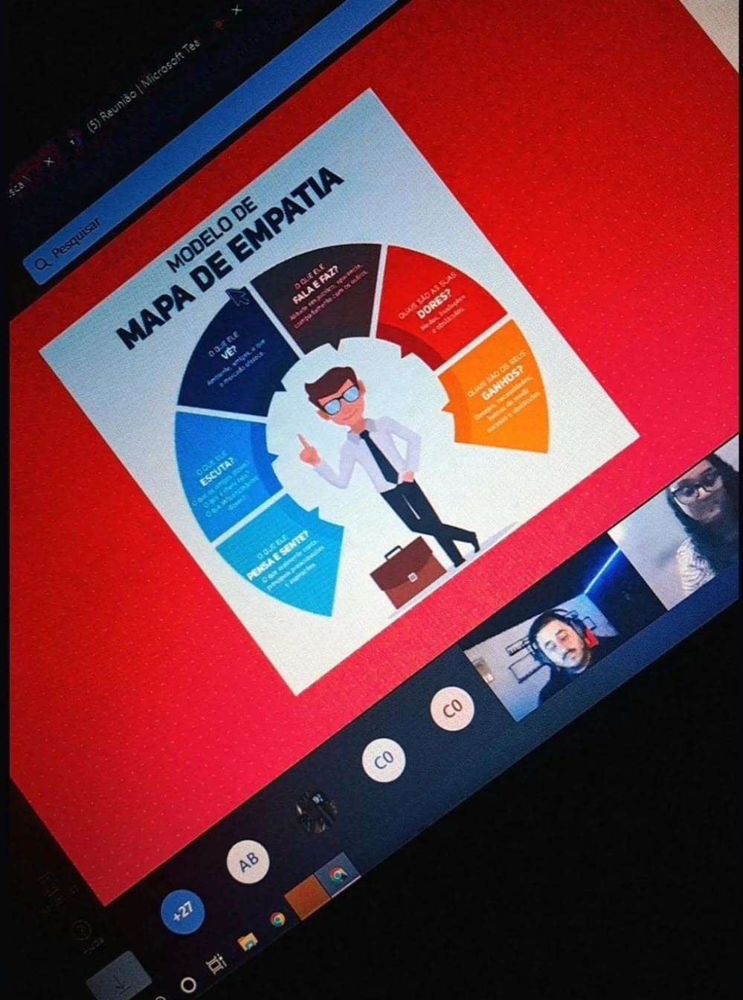

Primeiro encontro-Contextualização Profissional.
Apresentou-se as empresas parceiras e aprendemos como a contextualização profissional em tecnologia significa entender o contexto amplo do trabalho, incluindo mercado, usuários e tendências. Adaptar habilidades técnicas para criar soluções relevantes é essencial para o sucesso na carreira de tecnologia.
Etíca e valores
Nessa reunião sobre ética e valores, aprendi que são fundamentais em todas as áreas da vida, incluindo o trabalho. Manter integridade, respeito e responsabilidade são essenciais para o sucesso profissional e construção de relações confiáveis.
Encontro de milhões-Eduzz

Conhecemos o ambiente de trabalho Eduzz e sua proposta como empresa,houve dinâmicas ,palestras e debates.
Comunicação Interpessoal
No encontro sobre Comunicação Interpessoal, aprendi que expressar-se e ouvir ativamente são fundamentais para construir relacionamentos sólidos e colaborativos.
Objetivos da ONU
Apresentação da empresa ONU
Boas-vindas Itix Apresentação da trajetória profissional Carlos Santos
Aqui aprendemos sobre a importância da determinação, criatividade e habilidades empreendedoras para construir uma empresa própria.
Palestra da Itix-Inteligência artificial,redes sociais e regulamentação ética

Na interseção entre inteligência artificial, redes sociais e ética, abordarão sobre a importância de regulamentações éticas para garantir privacidade, segurança e equidade, minimizando consequências negativas como viés algorítmico e disseminação de desinformação.
Atividade:Documentário "O dilema das Redes"
Com "O Dilema das Redes", aprendi sobre os impactos negativos das mídias sociais, como manipulação de comportamento, polarização e preocupações com privacidade. O documentário destaca a necessidade de uma reflexão crítica sobre nosso uso dessas plataformas.
Atividade: Mapa mental - plano de carreira

- Especifique : etapas você deseja chegar em sua carreira profissional. objetivos pretende desenvolver percorrer metas deseja atingir.
Referente: referente ao dia 04/05/23 - boas-vindas Itix com apresentação da trajetória profissional Carlos Santo
Palestra com a consultora de RH - Raphaella
Na palestra com a consultora de RH sobre currículos, aprendi a destacar habilidades, experiências e conquistas de forma clara e adaptada para cada vaga. Entendi a importância de incluir palavras-chave relevantes para melhorar a visibilidade do currículo.
Atividade:Oficina de currículo
Criação dos nossos currículos
Metodologia Scrum

Aqui aprendemos sobre sobre uma abordagem ágil para gerenciamento de projetos, enfatizando colaboração, flexibilidade e entrega incremental em ciclos curtos de trabalho chamados "sprints".
Criatividade e inovação
A palestra discutiu como a criatividade e a inovação podem ser aplicadas ao desenvolvimento de sistemas inteligentes, voltados para resolver problemas urbanos como o gerenciamento de resíduos. O foco foi no uso da tecnologia para facilitar o processo de coleta de lixo reciclável nas cidades.
As possibilidades da IA no mercado de trabalho

A inteligência artificial (IA) está transformando o mercado de trabalho ao automatizar tarefas repetitivas e melhorar processos, permitindo que empresas aumentem a eficiência e tomem decisões em tempo real com base em dados. Além de abrir novas oportunidades em campos como desenvolvimento de algoritmos e ética em IA, a demanda por profissionais capacitados em machine learning cresce. Essa mudança exige novas habilidades, mas também cria oportunidades para carreiras mais criativas e estratégicas.
Liderança e gestão

A liderança e gestão 3.0 é uma abordagem moderna que foca na colaboração, motivação e inovação dentro das organizações. Diferente dos modelos tradicionais, que priorizam hierarquia e controle, a gestão 3.0 valoriza a autonomia das equipes, incentivando-as a contribuir com ideias e assumir responsabilidades. Baseada em princípios como auto-organização e feedback contínuo, essa abordagem permite que as equipes tomem decisões e aprendam constantemente. A liderança 3.0 também destaca o desenvolvimento dos colaboradores, reconhecendo que equipes engajadas e satisfeitas são chave para o sucesso e para uma cultura organizacional mais produtiva e inovadora.
Explorando Homelabs: Por que criar o seu Próprio ambiente de desenvolvimento pode transformar sua carreira em TI
Explorar um homelab é uma maneira eficaz de alavancar sua carreira em TI. Criar um ambiente de desenvolvimento próprio permite testar novas tecnologias, experimentar conceitos e adquirir habilidades práticas sem as restrições de um ambiente corporativo. Com um homelab, você pode configurar servidores, implementar redes, trabalhar com virtualização e automação, além de simular cenários de segurança. Essa prática oferece uma compreensão mais profunda das ferramentas e processos e é uma ótima chance de construir um portfólio sólido. Compartilhando suas experiências e projetos, você pode se destacar no mercado, mostrando iniciativa e habilidades técnicas para futuros empregadores.
Hacker do bem e a segurança digital no dia a dia
Um hacker ético, ou hacker do bem, é um especialista em segurança digital que utiliza suas habilidades para identificar e corrigir falhas em sistemas, ajudando a prevenir ataques maliciosos. Esses profissionais protegem redes, dados e aplicativos, assegurando maior segurança para empresas e usuários. No cotidiano, a segurança digital é essencial. Adoção de práticas simples, como senhas fortes, autenticação em dois fatores, atualizações regulares de software e cautela com links suspeitos, são fundamentais para proteção contra ameaças online. Hackers éticos trabalham proativamente para antecipar riscos e garantir um ambiente digital mais seguro para todos.
Você é uma pessoa organizada?
Ser organizado significa planejar e priorizar suas atividades, equilibrando suas responsabilidades de forma eficaz. Ferramentas como listas de tarefas, calendários para agendar compromissos e a técnica Pomodoro, que divide o tempo em blocos de trabalho e descanso, são úteis. Outra estratégia eficiente é a Matriz de Eisenhower, que ajuda a distinguir entre tarefas urgentes e importantes. Ao adotar esses hábitos diariamente, é possível manter o foco, evitar o acúmulo de tarefas e aumentar a produtividade de maneira organizada e eficiente.
Fluxo de operações comercial- UNO ERP

O Fluxo de Operações Comercial em um ERP (Enterprise Resource Planning) é um processo integrado que administra todas as fases das vendas e atividades comerciais de uma empresa. Ele inclui desde o registro de pedidos, emissão de notas fiscais, até o controle de estoque e recebimento de pagamentos. Esse fluxo automatiza tarefas e centraliza informações em um único sistema, permitindo que setores como vendas, finanças e logística atuem de forma coordenada. O propósito é aumentar a eficiência, minimizar erros e oferecer uma visão abrangente das operações, facilitando a tomada de decisões e o monitoramento do desempenho comercial.
Quais as tendências da área de TI com a virada da ia generativa e outras tecnologias

A revolução da IA Generativa está transformando significativamente a área de TI. Ferramentas como ChatGPT e DALL-E estão inovando o desenvolvimento de software, a automação de tarefas e a criação de conteúdo. Outra tendência é a automação inteligente, que incorpora IA em processos empresariais para aumentar a eficiência. Além disso, tecnologias como computação em nuvem, cibersegurança avançada e machine learning continuam a progredir, com ênfase em escalabilidade e proteção de dados. A convergência dessas inovações está moldando o futuro da TI, exigindo que os profissionais se adaptem rapidamente e adquiram novas competências.
Como posso ter uma carreira bem-sucedida?
Para alcançar uma carreira de sucesso, é fundamental construir uma marca pessoal sólida que represente sua identidade e a qualidade do seu trabalho. Isso inclui não apenas o desenvolvimento de habilidades técnicas, mas também o aprimoramento de soft skills, como comunicação, liderança e empatia, que são cruciais no ambiente profissional. Ter um estilo ou abordagem única que destaque seu trabalho no mercado pode fortalecer sua presença. Além disso, o uso de plataformas como o LinkedIn é essencial para promover suas conquistas. Compartilhar experiências, participar de debates e manter uma rede ativa são estratégias eficazes para fortalecer sua imagem e gerar novas oportunidades.
Capricho: skill cada vez mais raro no Mercado
Dar o seu melhor significa dedicar-se com cuidado e atenção para garantir a qualidade em tudo que faz. Na programação, isso envolve escrever código limpo, buscar soluções eficientes e estar sempre disposto a aprender. Usar práticas como organização, checklists e revisões frequentes do trabalho ajuda a manter um padrão elevado. Entretanto, nem todos os profissionais se comprometem com essa excelência, focando apenas em "fazer funcionar" sem se preocupar com a qualidade ou a manutenção do código. O diferencial está em quem se esforça continuamente para evoluir e entregar o melhor resultado possível.
Desenvolvimento Low Code e No Code
Low code e no code são métodos que facilitam o desenvolvimento de software. O low code utiliza blocos visuais combinados com um pouco de programação, acelerando o processo e permitindo maior personalização, embora ainda exija algum conhecimento técnico. Já o no code elimina a necessidade de codificação, permitindo criar soluções simples e rápidas apenas com interfaces visuais, mas com menos flexibilidade. A principal diferença entre eles está no grau de personalização: o low code oferece mais controle, enquanto o no code é mais restrito. Em comparação com a programação tradicional, ambas são mais rápidas e acessíveis, porém com menos flexibilidade e capacidade de lidar com soluções complexas.
Preparando-se para o amanhã: da FATEC para o mundo

Abordou como os estudantes podem se preparar para o futuro profissional. Flávia Freitas compartilhou sua jornada, incentivando os participantes a saírem da zona de conforto, desenvolverem networking e buscarem experiências diversas. Ela destacou a importância da curiosidade e do trabalho em equipe, enfatizando que bons hábitos formam bons profissionais a longo prazo.
Certificado IOCHPE Jornada Criatividade e Inovação
Nesta jornada, foi desenvolvido a competência de gerar ou propor, individual e coletivamente, ideias para soluções de problemas ou aproveitamento de oportunidades, a partir de diversificadas técnicas de estímulo à criatividade.